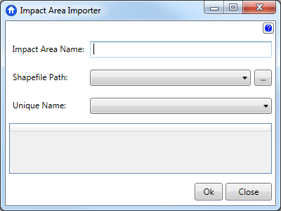
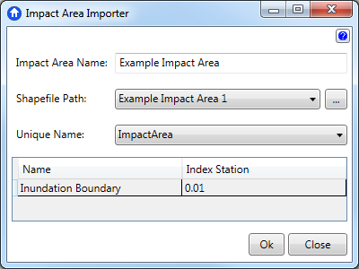

Impact Area Importer
Impact Areas essentially relate to Damage Reaches in HEC-FDA. More specifically they relate to SidReaches. This means that stationing on a structure does not have to be within the damage reach beginning and ending stations. To properly use this feature, the "Sid Reach" column in FDA needs to be checked when aggregated stage damage functions are computed. They operate as a way to group structures to an index location in data into your study. All structures must be in an impact area, and each impact area must have an index location defined. Defining index locations occurs in the final node of the study tree.
Impact areas are defined by polygon shapefiles, each record represents a unique impact area, and must have a unique name. The polygon used to define an impact area can have multiple parts.

To import impact areas:
- Enter the name of the impact area data.
- Select or browse for the shapefile.
- Select a unique name.
- Change the index station number for each polygon. Valid numbers are any non-integer, non-zero value, usually choices are between 0 and 1.
Example
